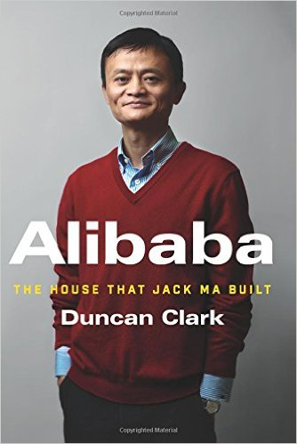

Title: Alibaba
Author: Duncan Clark
Rating: 6/10
Amazon Link
The book covers the rise of the Chinese e-commerce giant Alibaba. The story is told through the lens of the author Duncan Clark, a personal friend of the founder and Executive Chairman Jack Ma. The book doucments the companies journey from its infancy to post-IPO. The book highlights the importance of knowing your market the unique challenges that presented themselves when doing business in China. The battle between the internet giant Yahoo! and Alibaba was an ongoing theme throughout the book. Alibaba was able to take down the giant by staying connected to their customers, listening to their requests and capitalizing on Yahoo's mistake of treating the Chinese market like every other region they had done business with before. But perhaps the biggest reason for Alibaba's success was it's charismatic founder Jack Ma. Jack would compare business to ancient chinese folk tales and manifest himself in the heros of those stories. He was a kind man that always looked after his employees.
I didn't like how the story was told through the perspective of Duncan Clark because it felt inpersonal. Clark did sprinkle a personal touch on the story by mentioning his brief personal history with Jack but as whole it didn't feel very personal and at times felt like I was reading the companies history straight out of Wikipedia.